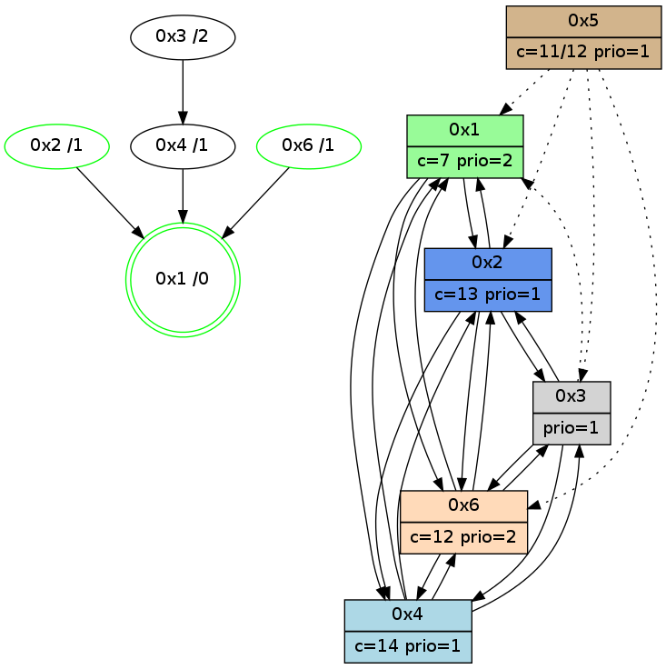

>> << IDX [start] -100 -25 -5 +0 +5 +25 +100 [975.015949965]
 Previous packets
----------------------------------------------------------------------
970.094864 beacon01(adaf) #0 coord=01,02,05,03,04,06 cycle=432.0ms assoc
-- color-indic=1 64 5f 28
970.104826 beacon02(adaf) #0 coord=01,02,05,03,04,06 cycle=432.0ms assoc 64 0e d7
970.114827 beacon05(adaf) #0 coord=01,02,05,03,04,06 cycle=432.0ms assoc 64 a8 fd
970.124826 beacon03(adaf) #0 coord=01,02,05,03,04,06 cycle=432.0ms assoc 64 34 d9
970.134826 beacon04(adaf) #0 coord=01,02,05,03,04,06 cycle=432.0ms assoc 64 92 f3
970.144826 beacon06(adaf) #0 coord=01,02,05,03,04,06 cycle=432.0ms assoc 64 e6 ef
970.156522 [Hello(4): seq=776 sym=2,1,6,3 sysInfo=hasWarning stat=2:2,11,7,1/1:15,1,0,0/6:14,11,6,2/3:0,0,1,2]
970.159298 [Color(2) seq=163 @0:0 color=13 prio=1 c=7,c,e;1,4,6,8,9,b]
970.164460 [Color(1) seq=202 @0:0 color=7 prio=2 c=1,4,6,8,9,b,c,d;0,2,3,5,a,e]
----------------------------------------------------------------------
970.586972 beacon01(adaf) #0 coord=01,02,05,03,04,06 cycle=432.0ms assoc
-- color-indic=1 64 27 85
970.596933 beacon02(adaf) #0 coord=01,02,05,03,04,06 cycle=432.0ms assoc 64 76 7a
970.606935 beacon05(adaf) #0 coord=01,02,05,03,04,06 cycle=432.0ms assoc 64 d0 50
970.616933 beacon03(adaf) #0 coord=01,02,05,03,04,06 cycle=432.0ms assoc 64 4c 74
970.626935 beacon04(adaf) #0 coord=01,02,05,03,04,06 cycle=432.0ms assoc 64 ea 5e
970.636936 beacon06(adaf) #0 coord=01,02,05,03,04,06 cycle=432.0ms assoc 64 9e 42
970.648664 [Hello(2): seq=1265 sym=3,6,1,4 sysInfo=hasWarning stat=3:3,11,5,3/6:0,12,6,0/1:11,6,10,0/4:2,3,2,0]
970.650820 [Hello(1): seq=676 sym=2,4,6 sysInfo=hasWarning,coloring-mode-on,ColoringModeRequestCalled stat=2:13,14,2,3/4:1,1,1,0/6:10,15,5,1]
970.654987 [Hello(6): seq=689 sym=4,2,1,3 sysInfo=hasWarning stat=4:6,10,4,1/2:11,8,14,2/1:2,6,15,1/3:5,3,5,5]
970.658773 [Color(6) seq=161 @0:0 color=12 prio=2 c=7,d,e;1,4,6,8,9,b]
----------------------------------------------------------------------
971.079082 beacon01(adaf) #0 coord=01,02,05,03,04,06 cycle=432.0ms assoc
-- color-indic=1 64 e3 ea
971.089043 beacon02(adaf) #0 coord=01,02,05,03,04,06 cycle=432.0ms assoc 64 b2 15
971.099044 beacon05(adaf) #0 coord=01,02,05,03,04,06 cycle=432.0ms assoc 64 14 3f
971.109043 beacon03(adaf) #0 coord=01,02,05,03,04,06 cycle=432.0ms assoc 64 88 1b
971.119044 beacon04(adaf) #0 coord=01,02,05,03,04,06 cycle=432.0ms assoc 64 2e 31
971.129044 beacon06(adaf) #0 coord=01,02,05,03,04,06 cycle=432.0ms assoc 64 5a 2d
971.140736 [Hello(4): seq=777 sym=2,1,6,3 sysInfo=hasWarning stat=2:3,12,7,1/1:0,2,0,0/6:15,12,6,2/3:0,0,1,2]
971.143410 [STC(1) #0.135 new-neigh,tree-change,inconsistent-stability,stable,to-color d=0]
971.145367 [Color(1) seq=203 @0:0 color=7 prio=2 c=1,4,6,8,9,b,c,d;0,2,3,5,a,e]
971.147163 [Color(2) seq=164 @0:0 color=13 prio=1 c=7,c,e;1,4,6,8,9,b]
971.149930 [Color(5) seq=110 @0:0 color=11/12 prio=1 c=8,d;4,7,9,c,e]
----------------------------------------------------------------------
971.571193 beacon01(adaf) #0 coord=01,02,05,03,04,06 cycle=432.0ms assoc
-- color-indic=1 64 af 5a
971.581155 beacon02(adaf) #0 coord=01,02,05,03,04,06 cycle=432.0ms assoc 64 fe a5
971.591154 beacon05(adaf) #0 coord=01,02,05,03,04,06 cycle=432.0ms assoc 64 58 8f
971.601155 beacon03(adaf) #0 coord=01,02,05,03,04,06 cycle=432.0ms assoc 64 c4 ab
971.611154 beacon04(adaf) #0 coord=01,02,05,03,04,06 cycle=432.0ms assoc 64 62 81
971.621156 beacon06(adaf) #0 coord=01,02,05,03,04,06 cycle=432.0ms assoc 64 16 9d
971.632627 [Hello(1): seq=677 sym=2,4,6 sysInfo=hasWarning,coloring-mode-on,ColoringModeRequestCalled stat=2:13,15,2,3/4:2,1,1,0/6:11,0,5,1]
971.635163 [Hello(6): seq=690 sym=4,2,1,3 sysInfo=hasWarning stat=4:6,10,4,1/2:12,9,14,2/1:2,7,0,1/3:6,3,5,5]
971.638097 [STC(4)->1 #0.135 new-neigh,tree-change,inconsistent-stability,to-color d=1]
971.640054 [STC(6)->1 #0.135 new-neigh,tree-change,inconsistent-stability,stable,to-color d=1]
971.641949 [Hello(2): seq=1266 sym=3,6,1,4 sysInfo=hasWarning stat=3:4,11,5,3/6:1,13,6,0/1:12,6,10,0/4:2,3,2,0]
971.651895 [Color(6) seq=162 @0:0 color=12 prio=2 c=7,d,e;1,4,6,8,9,b]
----------------------------------------------------------------------
972.063301 beacon01(adaf) #0 coord=01,02,05,03,04,06 cycle=432.0ms assoc
-- color-indic=1 64 6b 35
972.073262 beacon02(adaf) #0 coord=01,02,05,03,04,06 cycle=432.0ms assoc 64 3a ca
972.083262 beacon05(adaf) #0 coord=01,02,05,03,04,06 cycle=432.0ms assoc 64 9c e0
972.093262 beacon03(adaf) #0 coord=01,02,05,03,04,06 cycle=432.0ms assoc 64 00 c4
972.103262 beacon04(adaf) #0 coord=01,02,05,03,04,06 cycle=432.0ms assoc 64 a6 ee
972.113262 beacon06(adaf) #0 coord=01,02,05,03,04,06 cycle=432.0ms assoc 64 d2 f2
972.124961 [Hello(4): seq=778 sym=2,1,6,3 sysInfo=hasWarning stat=2:4,13,7,1/1:0,3,1,0/6:15,13,7,2/3:0,0,1,2]
972.127488 [Color(1) seq=204 @0:0 color=7 prio=2 c=1,4,6,8,9,b,c,d;0,2,3,5,a,e]
972.128872 [Hello(3): seq=776 sym=6,4,2 asym=1 sysInfo=hasWarning stat=6:4,5,1,1/4:1,3,4,0/2:1,10,8,1/1:11,10,12,1]
972.131295 [Color(2) seq=165 @0:0 color=13 prio=1 c=7,c,e;1,4,6,8,9,b]
972.132724 [STC(3)->4-.->1 #0.135 new-neigh,tree-change,inconsistent-stability,to-color d=2]
----------------------------------------------------------------------
972.555411 beacon01(adaf) #0 coord=01,02,05,03,04,06 cycle=432.0ms assoc
-- color-indic=1 64 26 32
972.565372 beacon02(adaf) #0 coord=01,02,05,03,04,06 cycle=432.0ms assoc 64 77 cd
972.575372 beacon05(adaf) #0 coord=01,02,05,03,04,06 cycle=432.0ms assoc 64 d1 e7
972.585373 beacon03(adaf) #0 coord=01,02,05,03,04,06 cycle=432.0ms assoc 64 4d c3
972.595373 beacon04(adaf) #0 coord=01,02,05,03,04,06 cycle=432.0ms assoc 64 eb e9
972.605374 beacon06(adaf) #0 coord=01,02,05,03,04,06 cycle=432.0ms assoc 64 9f f5
972.616879 [Hello(1): seq=678 sym=2,4,6 sysInfo=hasWarning,coloring-mode-on,ColoringModeRequestCalled stat=2:14,0,2,3/4:2,1,2,0/6:12,1,6,1]
972.619414 [Hello(6): seq=691 sym=4,2,1,3 sysInfo=hasWarning stat=4:7,10,4,1/2:12,10,14,2/1:3,8,0,1/3:7,3,6,5]
972.622490 [Hello(2): seq=1267 sym=3,6,1,4 sysInfo=hasWarning stat=3:4,11,6,3/6:1,14,6,0/1:12,6,10,0/4:3,3,2,0]
972.624305 [Color(6) seq=163 @0:0 color=12 prio=2 c=7,d,e;1,4,6,8,9,b]
----------------------------------------------------------------------
973.047519 beacon01(adaf) #0 coord=01,02,05,03,04,06 cycle=432.0ms assoc
-- color-indic=1 64 e2 5d
973.057482 beacon02(adaf) #0 coord=01,02,05,03,04,06 cycle=432.0ms assoc 64 b3 a2
973.067481 beacon05(adaf) #0 coord=01,02,05,03,04,06 cycle=432.0ms assoc 64 15 88
973.077480 beacon03(adaf) #0 coord=01,02,05,03,04,06 cycle=432.0ms assoc 64 89 ac
973.087480 beacon04(adaf) #0 coord=01,02,05,03,04,06 cycle=432.0ms assoc 64 2f 86
973.097481 beacon06(adaf) #0 coord=01,02,05,03,04,06 cycle=432.0ms assoc 64 5b 9a
973.109173 [Hello(4): seq=779 sym=2,1,6,3 sysInfo=hasWarning stat=2:5,14,7,1/1:1,4,1,0/6:0,14,7,2/3:1,0,2,2]
973.111959 [Color(2) seq=166 @0:0 color=13 prio=1 c=7,c,e;1,4,6,8,9,b]
973.122545 [Color(1) seq=205 @0:0 color=7 prio=2 c=1,4,6,8,9,b,c,d;0,2,3,5,a,e]
----------------------------------------------------------------------
973.539626 beacon01(adaf) #0 coord=01,02,05,03,04,06 cycle=432.0ms assoc
-- color-indic=1 64 ae ed
973.549586 beacon02(adaf) #0 coord=01,02,05,03,04,06 cycle=432.0ms assoc 64 ff 12
973.559588 beacon05(adaf) #0 coord=01,02,05,03,04,06 cycle=432.0ms assoc 64 59 38
973.569587 beacon03(adaf) #0 coord=01,02,05,03,04,06 cycle=432.0ms assoc 64 c5 1c
973.579587 beacon04(adaf) #0 coord=01,02,05,03,04,06 cycle=432.0ms assoc 64 63 36
973.589588 beacon06(adaf) #0 coord=01,02,05,03,04,06 cycle=432.0ms assoc 64 17 2a
973.601336 PARSE ERROR************************
Traceback (most recent call last):
File "PacketAnalysis.py", line 167, in showOperaPacket
structPacket = OperaPacketParse.parsePacket(rawPacket)
File "../../pkg-python/HipSens/Core/OperaPacketParse.py", line 461, in parsePacket
return parseHelloMessage(data)
File "../../pkg-python/HipSens/Core/OperaPacketParse.py", line 125, in parseHelloMessage
struct.unpack("!H",linkList[:2])[0])
error: unpack requires a string argument of length 2
48 20 02 00 04 f4 00 02 02 08 03 00 06 00 01 00 04 00 53 04 00 02 00 00 4c 08 36 b5 06 f1 0a 7c 02 33 4d 37
973.604007 [Hello(6): seq=692 sym=4,2,1,3 sysInfo=hasWarning stat=4:7,10,4,1/2:12,11,14,2/1:4,9,0,1/3:8,3,6,5]
973.607163 [Color(6) seq=164 @0:0 color=12 prio=2 c=7,d,e;1,4,6,8,9,b]
973.609305 [Hello(1): seq=679 sym=2,4,6 sysInfo=hasWarning,coloring-mode-on,ColoringModeRequestCalled stat=2:15,0,2,3/4:2,1,2,0/6:13,2,6,1]
973.611655 [STC(1) #0.136 new-neigh,tree-change,inconsistent-stability,stable,to-color d=0]
----------------------------------------------------------------------
974.031735 beacon01(adaf) #0 coord=01,02,05,03,04,06 cycle=432.0ms assoc
-- color-indic=1 64 6a 82
974.041696 beacon02(adaf) #0 coord=01,02,05,03,04,06 cycle=432.0ms assoc 64 3b 7d
974.051697 beacon05(adaf) #0 coord=01,02,05,03,04,06 cycle=432.0ms assoc 64 9d 57
974.061696 beacon03(adaf) #0 coord=01,02,05,03,04,06 cycle=432.0ms assoc 64 01 73
974.071696 beacon04(adaf) #0 coord=01,02,05,03,04,06 cycle=432.0ms assoc 64 a7 59
974.081697 beacon06(adaf) #0 coord=01,02,05,03,04,06 cycle=432.0ms assoc 64 d3 45
974.093297 [STC(6)->1 #0.136 new-neigh,tree-change,inconsistent-stability,stable,to-color d=1]
974.095380 [STC(2)->1 #0.136 new-neigh,tree-change,inconsistent-stability,stable,to-color d=1]
974.097066 [Hello(3): seq=778 sym=6,4,2 asym=1 sysInfo=hasWarning stat=6:6,7,1,1/4:1,3,4,0/2:3,11,8,1/1:13,11,13,1]
974.099023 [Hello(4): seq=780 sym=2,1,6,3 sysInfo=hasWarning stat=2:6,15,7,1/1:2,5,2,0/6:1,15,7,2/3:1,0,2,2]
974.102150 [STC(4)->1 #0.136 new-neigh,tree-change,inconsistent-stability,to-color d=1]
974.108903 [Color(1) seq=206 @0:0 color=7 prio=2 c=1,4,6,8,9,b,c,d;0,2,3,5,a,e]
974.117722 [Color(2) seq=167 @0:0 color=13 prio=1 c=7,c,e;1,4,6,8,9,b]
----------------------------------------------------------------------
974.523842 beacon01(adaf) #0 coord=01,02,05,03,04,06 cycle=432.0ms assoc
-- color-indic=1 64 34 e3
974.533803 beacon02(adaf) #0 coord=01,02,05,03,04,06 cycle=432.0ms assoc 64 65 1c
974.543803 beacon05(adaf) #0 coord=01,02,05,03,04,06 cycle=432.0ms assoc 64 c3 36
974.553805 beacon03(adaf) #0 coord=01,02,05,03,04,06 cycle=432.0ms assoc 64 5f 12
974.563804 beacon04(adaf) #0 coord=01,02,05,03,04,06 cycle=432.0ms assoc 64 f9 38
974.573803 beacon06(adaf) #0 coord=01,02,05,03,04,06 cycle=432.0ms assoc 64 8d 24
974.584974 [Hello(1): seq=680 sym=2,4,6 sysInfo=hasWarning,coloring-mode-on,ColoringModeRequestCalled stat=2:15,1,2,3/4:2,1,2,0/6:13,2,7,1]
974.587517 [Hello(6): seq=693 sym=4,2,1,3 sysInfo=hasWarning stat=4:8,10,5,1/2:13,12,15,2/1:5,10,1,1/3:9,3,6,5]
974.590675 [Color(6) seq=165 @0:0 color=12 prio=2 c=7,d,e;1,4,6,8,9,b]
974.594393 [STC(3)->4-.->1 #0.136 new-neigh,tree-change,inconsistent-stability,to-color d=2]
974.600503 [Hello(2): seq=1269 sym=3,6,1,4 sysInfo=hasWarning stat=3:5,11,6,3/6:2,0,7,0/1:13,7,11,0/4:3,3,2,0]